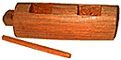
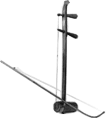

 Ekwe: Нигерийский двухтональный барабан-ствол. Звук извлекают гладкой деревянной палочкой или колотушкой с резиновым наконечником. Основная разновидность хуциня. Такие инструменты стали популярны в Китае во время Династии Sung(960 - 1279). У инструмента две настраиваемые струны и шейка без грифа. Деревянный корпус шестигранной, реже цилиндрической, формы покрыт змеиной кожей, которая придает отчетливую окраску звучанию. Вариант пикколо, настроенный на октаву выше, называется pan-hu.Исполнитель держит инструмент вертикально; волос смычка продевается между струнами. Существует большое многообразие техник для игры на erhu, и сегодня он равно популярен как сольный и оркестровый инструмент. |